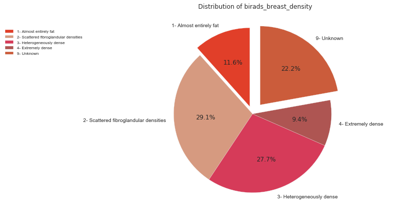
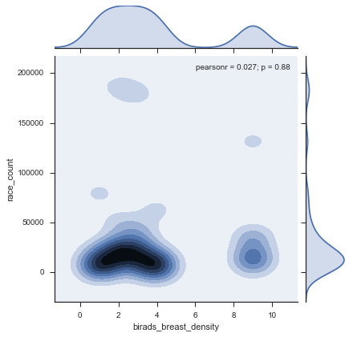

Overview
Breast cancer is the second most common cause of deaths from cancer among women in the United States.
In 2006, it is estimated that about 212,000 new cases of invasive breast cancer will be diagnosed, along with 58 000 new cases of non-invasive breast cancer and 40 000 women are expected to die from this disease (Data from American Cancer Society, 2006).
Problem Statement
The aim of this captone project is to determinte which factors have more incidence in the breast cancer diagnosis after a regular mamogram. At the same time I will build a model to predict the probability of breast cancer based on those factors. I will be also creating an interface to predict the probability of breast cancer after entering the factors using the model.
Dataset Background
This dataset includes 2,392,998 screening mammograms (called the "index mammogram") from women included in the Breast Cancer Surveillance Consortium (BCSC) and results were published by Barlow et al. in the September 2006 issue of the Journal of the National Cancer Institute. The women in this dataset did not have a previous diagnosis of breast cancer and did not have any breast imaging in the nine months preceding the index screening mammogram. However, all women had undergone previous breast mammography in the prior five years (though not in the last nine months). Cancer registry and pathology data were linked to the mammography data and incident breast cancer (invasive or ductal carcinoma in situ) within one year following the index screening mammogram was assessed. There is one observation per woman, as opposed to multiple observations. All population and all other characteristics remain the same.
Data Dictionary
| Variable Name | Description | Coding |
|---|---|---|
| year | Calendar year of observation | Numerical, 2000-2009 |
| age_group_5_years | Age (years) in 5 year groups |
|
| race_eth | Race/ethnicity |
|
| first_degree_hx | History of breast cancer in a first degree relative |
|
| age_menarche | Age (years) at menarche |
|
| age_first_birth | Age (years) at first birth |
|
| BIRADS_breast_density | BI-RADS breast density |
|
| current_hrt | Use of hormone replacement therapy |
|
| menopaus | Menopausal status |
|
| bmi_group | Body mass index |
|
| biophx | Previous breast biopsy or aspiration |
|
| breast_cancer_history | Prior breast cancer diagnosis |
|
| count | Frequency count of this combination of covariates | Numerical |
Data Mining
I created Postgres Local Data Base to move the data set to a table and to be able to run queries for EDA purposes and to create mini data frames for plotting and research.
Table risk_data - see column description in the above data dictionary

EDA / Findings





Risks and Assumptions
The risk of modeling is always to be able to obtain accurate relative results from predicting based on factors, such as demographics, reproductive history, medications, genetic factors (e.g., family history and susceptibility genes), and clinical and biologic markers (e.g., blood pressure, cholesterol, enzyme levels, and histologic markers). How these factors act jointly on risk also is important. These relative risk and attributable risk estimates, as well as missing or biased data has to be taken into account when reviewing the results of the present study
The Statistical techniques used to calculate risk include empirical analysis and logistic regression as well as other models that were compared based on their scores